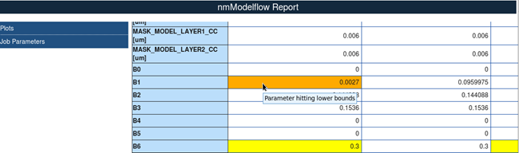

You can output HTML reports for completed
calibration jobs. The Calibre nmModelflow GUI makes it easy to create
reports with a punchlist of items to report; no coding is required.
Procedure
- Raise the
Calibration Job Manager. Select at least one calibration job from
the list, then click either the Summary Report or Compare
Summary button.
- Select
calibration record types from the list.
Only items selected from the list are included in the
summary report output.
- When you
have finished making selections, do one of the following actions:
Click Summary
Report if you selected a single calibration job.
Click Next if
you selected multiple calibration jobs, then use the text field
to write a description of the comparison report. Click the Directory button
at the bottom of the dialog box.
- Use the
file browser that appears to navigate to an existing directory or
create a new one, then click Choose.
Note: Creating a summary report deletes
the current contents of the selected directory. If the directory
is not empty, Calibre nmModelflow asks you to confirm deletion.
Results
Calibre
nmModelflow creates an HTML page containing the selected items,
which can be viewed in any web browser. For multiple summary reports,
each calibration job is given its own column in a comparison table.
All summary
reports contain your user notes as the front page; it is recommended
that you add any important details about the comparison for later
reference.
Parameters
at the upper and lower boundaries of their range in summary reports
and comparison summary reports are highlighted.
